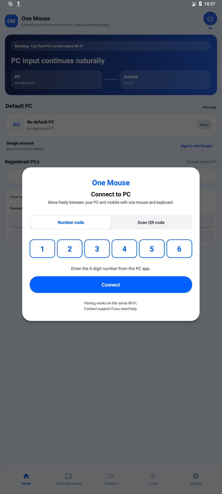

1. Bewegen Sie den Cursor
Schieben Sie einen Finger, um den Zeiger zu bewegen. Heben Sie den Finger und positionieren Sie ihn neu, um sich weiter zu bewegen.
Führung
Die meisten Leute müssen nur dieser Reihenfolge folgen. Für die härteren Netzwerkdetails siehe Technik & SicherheitWenn etwas nicht funktioniert, überprüfen Sie Hilfe getrennt.
Android Setup
Wählen Sie ein Google-Konto, eine QR/Code-Paarung mit demselben WLAN oder Bluetooth. Alle drei Methoden benötigen Android-Zugänglichkeit, um Ihr Telefon mit der PC-Maus und der Tastatur zu steuern.
Finden Sie Ihre mit dem Internet verbundenen Geräte in der Kontoliste. Es wird kein QR- oder Pairing-Code benötigt.
Ob Geräte angeschlossen werden können, hängt vom Netzwerk ab. Wählen Sie Wi-Fi oder Bluetooth, um OneMouse zu verwenden, ohne sich anzumelden.
Gerät fehlt in Ihrem Konto oder kann keine Verbindung herstellen?Der PC kann kabelgebundenes LAN verwenden, solange er mit dem gleichen Router wie das Telefon verbunden ist.
Führen Sie OneMouse auf beiden Geräten aus. Öffnen Sie Geräte in der PC-App.
Aktivieren Sie den Dienst unter Android-Einstellungen → Zugänglichkeit → Installierte Apps (oder heruntergeladene Apps) → OneMouse. Menünamen variieren je nach Hersteller. Überprüfen Sie auch die Berechtigungen, die für die Suche erforderlich sind, z. B. Wi-Fi-Geräte in der Nähe.
Erweitern Sie in Geräte Andere Möglichkeiten zum Verbinden und Wählen von QR & Code für diesen PC. Dieser Dialog zeigt den QR und den sechsstelligen Code.
Wählen Sie Home → Andere Möglichkeiten zur Verbindung → Hinzufügen von QR- oder Pairing-Code. Geben Sie die sechs Ziffern im Zahlencode ein und wählen Sie Connect oder verwenden Sie Scan QR-Code → Öffnen Sie die Kamera, um den QR des PCs zu scannen. Wählen Sie eine Methode.
Bestätigen Sie, dass der PC unter Registrierte PCs auf dem Startbildschirm des Telefons erscheint. Bereits registrierte Geräte benötigen diese Authentifizierung nicht jedes Mal.
Passen Sie die Platzierung des Telefons an die tatsächliche Position des Telefons an und bewegen Sie dann die Maus durch die konfigurierter Cursor-Eingangsdurchgang Wenn der Durchgang schmal ist, versuchen Sie zuerst die Mitte des Randes.




Tatsächliche App-Bildschirme, die mit Beispielgeräten und Codes aufgenommen wurden. Verwenden Sie den Code oder QR, der in Ihrer eigenen PC-App beim Verbinden angezeigt wird. Wählen Sie ein Bild aus, um es in voller Größe anzuzeigen.
Bluetooth befindet sich in der Beta-Phase. Es ist kein Wi-Fi, Google-Anmeldung, QR-Code oder Pairing-Code erforderlich.
Diese Schritte sind für Windows ↔ Android. Bluetooth trägt kein Remote-Video. Um den PC-Bildschirm auf Ihrem Telefon anzuzeigen, verwenden Sie Wi-Fi / LAN oder eine unterstützte Kontoverbindung.
Bluetooth-Einstellungen und detaillierte SchritteEingabeberechtigung: Android Einstellungen → Zugänglichkeit → Installierte Apps (oder heruntergeladene Apps) → OneMouse. Verbunden, aber die Maus wird sich nicht kreuzen?
Position des Telefons
Ziehen Sie jedes Gerät an seine reale Position im Anordnungsbildschirm. Cursor-Eingangspassage an der entsprechenden Kante, wobei der Durchgang nur einen Teil dieser Kante abdecken darf.

Fernbedienung
Tippen Sie bei Geräten auf das Fernbedienungssymbol in der Reihe eines gepaarten Android, und es öffnet sich ein separates Fenster, in dem der Bildschirm des Telefons angezeigt wird. Das erste Mal, wenn Sie es öffnen, ist die Android-Bildschirmgenehmigung erforderlich.
Öffnen Sie ein Fenster von seinem Fernbedienungssymbol in Geräten oder mit dem Standard Ctrl + Alt + Shift + 1 ~ 9Das Ziehen mit der rechten Taste funktioniert mit Gestenerweiterungen, die im Browser des Ziel-PCs konfiguriert sind, getrennt von Android-Gesten.

Android: Windows
Sehen Sie sich Ihren PC-Bildschirm an, klicken Sie nach Berührung, bewegen Sie den Cursor und tippen Sie mit der Tastatur Ihres Telefons. Sowohl PC als auch Android benötigen aktuelle Apps, die diese Funktion unterstützen.

Bildqualität und maximale Bildrate im Bedienfeld wählen. Ein PC, der Live-Qualitätsänderungen unterstützt, wendet sie an, ohne sie wieder zu verbinden. Die tatsächliche Auflösung und Bildrate hängen von der Geräteleistung und den Netzwerkbedingungen ab.
Zum Ende verwenden Bedienfeld: Disconnect. Das Trennen der Fernbedienung lässt den PC laufen. Bluetooth-Verbindungen tragen kein Remote-Video.
Diese erklärenden Animationen zeigen die Grundlagen des Cursor-Modus. Es sind keine Aufnahmen der App.
Schieben Sie einen Finger, um den Zeiger zu bewegen. Heben Sie den Finger und positionieren Sie ihn neu, um sich weiter zu bewegen.
Bewegen Sie den Zeiger über eine Schaltfläche, dann tippen Sie einmal. Der Klick erfolgt am Zeiger, nicht an Ihrem Finger.
Legen Sie den Zeiger auf eine Titelleiste oder ein Element und halten Sie den Finger still, bis der Zeiger blau wird. Bewegen Sie den Finger zum Ziehen und heben Sie ihn dann an, um das Element fallen zu lassen.
Bei 1x, schieben Sie zwei Finger zusammen, um den PC zu scrollen. Spreizen Sie zwei Finger, um hineinzuzoomen; sobald Sie hineinzoomen, bewegen Sie sie zusammen, um die Ansicht zu schwenken.
Android-Mausgesten
Wie man Gesten, die sieben Strichmuster und die Unterstützungsgrenzen aktiviert.
Schalten Sie in Einstellungen → Tippen & Zwischenablage Mausgesten ein und wählen Sie die Apps (standardmäßig aus). Sowohl PC als auch Android benötigen eine gestenfähige Version.
Wählen Alle Apps Gesten in Apps und auf dem Startbildschirm zu verwenden. Überprüfen Sie die Support Limits
Bewegen Sie den PC-Pointer auf das Android-Handy oder Tablet und öffnen Sie eine ausgewählte App.
Der Pfeil und die vertikale Anzeige zeigen Richtung und Scrollintensität basierend auf der Strichlänge, nicht Ihre Position auf der Seite oder eine genaue Entfernung.
| Gesten | Aktion |
|---|---|
| ← | RückenZeichne links, um zur vorherigen Seite oder zum vorherigen Bildschirm zurückzukehren. |
| → | VorwärtsZeichne rechts, um nach dem Zurückgehen zu einer Seite zurückzukehren. |
| ↑ | Scrollen Sie nach obenLängere Striche scrollen mehr, kürzere Striche weniger. |
| ↓ | Scrollen Sie nach untenLängere Striche scrollen mehr, kürzere Striche weniger. |
| ↓ → | Minimierung der AppGehen Sie nach Hause, ohne die App zu schließen. |
| ↑ ↓ | BeladungAktualisieren Sie die Seite in einem unterstützten Browser. |
| ↑ → | Aktuelle AppsÖffnen Sie die Liste der letzten Apps, um eine andere App auszuwählen. |
Akten und Zwischenablagen

Screenshots aufnehmen und versenden
Erfassen Sie Ihren eigenen PC oder das Gerät, das Sie gerade steuern, kopieren oder speichern Sie das Ergebnis aus der Vorschau oder senden Sie es an die Zwischenablage eines angeschlossenen Geräts.
Wenn Sie die Verknüpfung geändert haben, verwenden Sie die konfigurierten Tasten. Esc oder Cancel schließt die Auswahl, ohne ein Bild zu senden.

Mobile für PC
Für LAN-Transfers wählen Sie die Standard-PC auf dem Startbildschirm der mobilen App und überprüfen Sie, ob sie gepaart und verbunden ist. Senden Sie Dateien vom Transfer-Tab oder vom Android-Share-Menü und senden Sie Text über OneMouse an den PC im Auswahlmenü.
In PC Einstellungen → Allgemein → Dateiübertragung → Empfängerort der Datei, Verwendung Ordner ändern das Ziel zu wählen und Ordner öffnen Das ist sowohl auf Haupt- als auch auf Sub-PCs verfügbar.


Mitteilungen und Antworten
In der Android-App aktivieren Benachrichtigungen an den PC senden, Benachrichtigungszugriff erlauben und die zu übertragenden Apps auswählen. Einstellungen → Benachrichtigungen.
Der gleiche Bildschirm zeigt die Historie und die Retentionseinstellungen an. Mehr über Benachrichtigungen
Antwort Es wird angezeigt, wenn PC- und Android-Support-Antworten und die ursprüngliche Telefonbenachrichtigung eine Freitext-Antwort bieten. Senden oder Ctrl + Enter über die ursprüngliche Telefon-App senden ()Enter Fügt einen Line Break hinzu.
Anzahl Abkürzungen
Mit mindestens zwei LAN-Geräten auf dem Haupt-PC, wählen Sie Geräte → Auftrag bearbeitenZiehen Sie den Griff oder verwenden Sie ↑/↓; Änderungen automatisch speichern, dann wählen GeschehenVerbindungs- und Fernfenster-Verknüpfungsnummern folgen der gleichen Reihenfolge.
Bluetooth
Bluetooth befindet sich in der Beta-Phase. Es ist kein Wi-Fi, Google-Anmeldung, QR-Code oder Pairing-Code erforderlich.
Windows↔Android und Windows↔Windows können Eingaben, Zwischenablagen und Dateien direkt über Bluetooth austauschen.

Ein weiterer PC


Mac · Öffentliche Unterstützung
Installieren Sie das öffentliche DMG auf dem Mac, starten und verwalten Sie die LAN-Verbindung von OneMouse unter Windows.
Führen Sie OneMouse unter Windows 10/11 und auf dem Mac aus, wobei beide Computer mit demselben WLAN oder LAN verbunden sind. Verbindungen werden von Windows aus gestartet und verwaltet.
zulässig Bedienungshilfen So kann der Mac empfangene Maus- und Tastatureingaben ausführen. Lokales Netzwerk zum Auffinden; macOS 13/14 zeigt dieses Element möglicherweise nicht an.
Öffnen Sie Geräte in der Windows-App und wählen Sie den erkannten Mac aus.
Geben Sie in Windows den 6-stelligen Pairing-Code ein, der vom Mac angezeigt wird, und bestätigen Sie dann die Pairing.
Platzieren Sie den Mac neben dem Windows-Display im Arrangement-Editor. Bewegen Sie den Cursor über diesen Rand, um ihn zu steuern und Dateien und Zwischenablageinhalte in beide Richtungen auszutauschen.
Die Berechtigung zur Bildschirm- und Systemaudioaufzeichnung ist nur erforderlich, wenn Sie die Anzeige des Mac von Windows aus anzeigen oder steuern möchten. OneMouse erfasst kein Systemaudio.
Mac Bluetooth ist als Beta verfügbar: Aktivieren Sie es in den Mac-App-Einstellungen (standardmäßig deaktiviert). LAN bleibt der offiziell unterstützte Pfad und die Bildschirm- oder Fensterfreigabe ist nur LAN.
Genehmigungen
Android-Eingaben erfordern Accessibility Service; Mac-Eingaben erfordern Accessibility. Das Anzeigen eines Android- oder Mac-Remote-Bildschirms erfordert auch die Bildschirmerfassung oder die Aufnahmegenehmigung.
Diese PC-Verknüpfungen sind standardmäßig. In PC-Einstellungen → Verknüpfungen können Sie jede Kombination ändern, einzelne Aktionen ausschalten oder alle Verknüpfungen deaktivieren. Verwenden Sie die gespeicherte Kombination, wenn Sie sie geändert haben.
| Default Shortcut | Aktion und Bedingungen |
|---|---|
| Ctrl+Alt+1~9 | Haupt-PC: Verbinden Sie die Eingabesteuerung mit dem passenden Gerät in der Liste. Drücken Sie die gleiche Nummer erneut, um das Gerät freizugeben, das Sie gerade steuern. |
| Ctrl+Alt+Shift+1~9 | Haupt-PC: Öffnen Sie das passende Fernfenster oder bringen Sie ein vorhandenes Fenster nach vorne. Drücken Sie es erneut, schließt das Fenster nicht. Es verwendet die gleichen LAN-Gerätenummern wie Verbindungskombinationen; Bluetooth-Geräte sind von der Nummerierung ausgeschlossen. |
| Ctrl+Alt+D | Zeigen / Ausblenden der Quick Drop Zone. |
| Ctrl+Alt+S | Wählen Sie einen Bereich auf dem Windows-PC, Mac oder Android-Gerät, den Sie steuern, und erhalten Sie ihn auf dem Haupt-PC. Ohne Ferngerät unter Kontrolle, erfassen Sie diesen PC. Beide Apps müssen die Funktion unterstützen, und das Ziel benötigt Erfassungsberechtigung. |
| Ctrl+Alt+V | Haupt-PC: Kopieren Sie einen Verifizierungscode, während die Telefonbenachrichtigung auf dem PC sichtbar ist. |
| Ctrl+V | Freigegebene Dateien, die auf einen anderen PC kopiert werden, empfangen und einfügen. Da keine freigegebenen Dateien warten, bleibt gewöhnliches Einfügen verfügbar. |
| Ctrl+Alt+Backspace | Haupt-PC: Bringen Sie den Cursor sofort in die Mitte Ihres eigenen Monitors zurück, während Sie ein anderes Gerät steuern. |
Dies sind Eingabekombinationen, die an Android gesendet werden, getrennt von den oben genannten Einstellungen für die PC-App. Die Textbearbeitung hängt von der Unterstützung in der Ziel-App und im Textfeld ab.
| Default Shortcut | Aktion und Bedingungen |
|---|---|
| PrintScreen | Android 11+: Erfassen Sie den Telefonbildschirm während der direkten Kontrolle und senden Sie ihn an den PC. |
| Alt+Shift+↑ / Alt+Shift+↓ | Erhöhen / Senken der Bildschirmhelligkeit von Android. Erfordert die Berechtigung, die Systemeinstellungen zu ändern. |
| Alt+↑ / Alt+↓ | Erhöhen / senken Sie das Android-Medienvolumen. |
| Alt+Tab / Alt+Shift+Tab | Wechseln Sie die letzten Apps / den letzten Zyklus in umgekehrter Reihenfolge. |
| Ctrl+A / Ctrl+C / Ctrl+X / Ctrl+V | Wählen Sie all / copy / cut / paste in einem unterstützten Textfeld aus. |
| Ctrl+Insert / Shift+Insert / Shift+Delete | Kopieren / Einfügen / Schneiden in einem unterstützten Textfeld. |
| Ctrl+Z | Undo in Apps und Textfeldern, die es unterstützen. |
Das Standard-Windows-Verknüpfungs-Mapping sendet Strg als Befehl und Alt als Option. Sie können in den Mac-App-Tastatureinstellungen zum nativen Mac-Modifier-Mapping wechseln. Dies bedeutet nicht, dass Strg in den Windows-App-Verknüpfungen oben durch Befehl ersetzt wird.